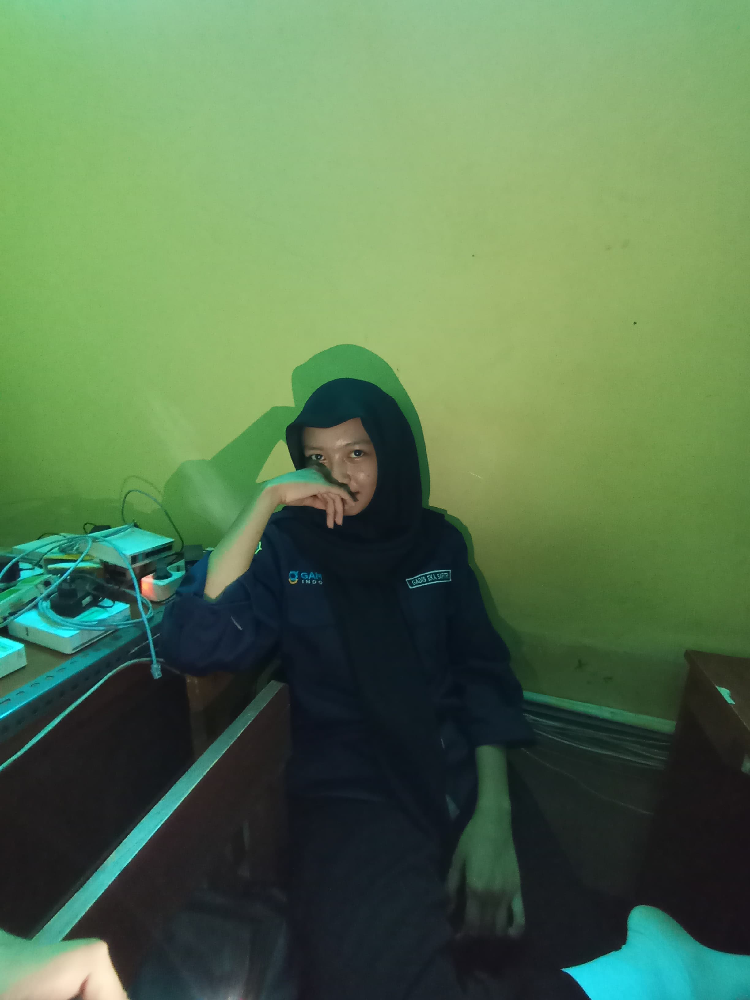
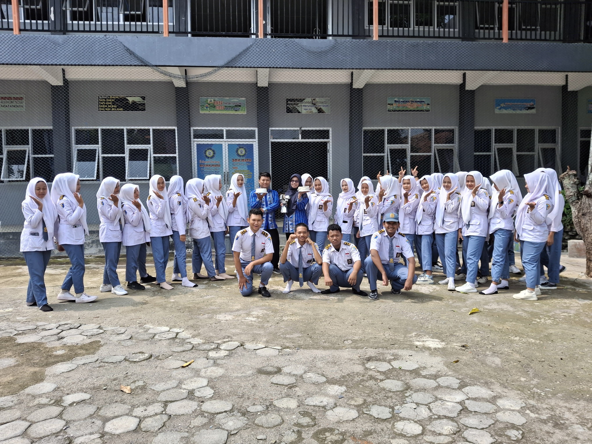
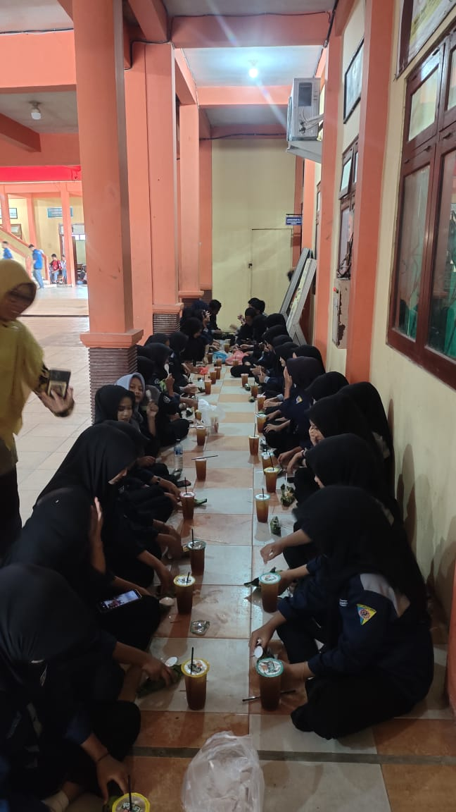
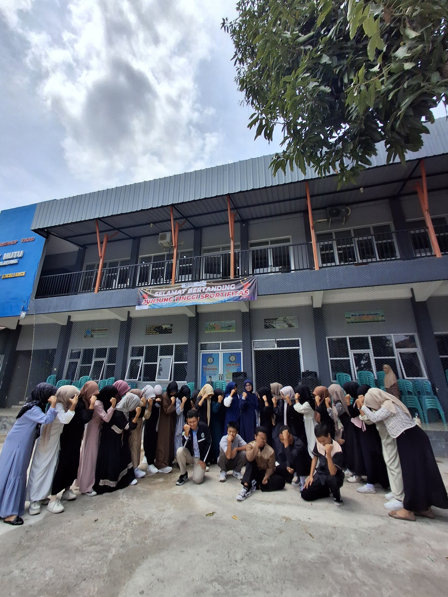

Tentang Kelas TKJ 1 Industri
Kelas TKJ 1 Industri adalah kelas unggulan yang berfokus pada teknologi jaringan berbasis industri. Kami mempersiapkan siswa menjadi ahli dalam bidang IT yang siap menghadapi tantangan di era digital.
Guru & Wali Kelas
Wali Kelas: Ninik Siswanti, S.Kom
Mengawasi perkembangan siswa dan mendukung pencapaian akademik serta non-akademik.
Guru Pengajar di TKJ 1 Industri
- Winarno - Guru yang ngajar praktek di kelas industi
Ketua Kelas

Nama Ketua: Gadis Eka
Visi: Membangun kelas yang solid dan inovatif dengan semangat kekeluargaan.
Galeri Kelas


